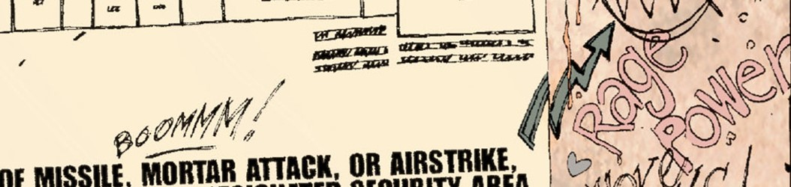
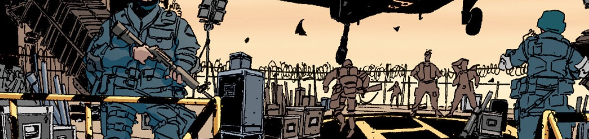

<html lang="En-Us"></html>
  <head>
    <meta charset="UTF-8" />
    <meta http-equiv="X-UA-Compatible" content="IE=edge" />
    <meta name="viewport" content="width=device-width, initial-scale=1.0" />
    <title>Apprendre l'anglais!</title>
    <link rel="stylesheet" href="./styles/style.css" />
    <link rel="icon" type="image/x-icon" href="./images/favicon.ico" />
  </head>

  <body>
    <header>
      <!-- Voir h1index.css pour l'effet -->
      <h1>
        <div class="titleDiv01">L</div>
        <div class="titleDiv02">E</div>
        <div class="titleDiv03">A</div>
        <div class="titleDiv04">R</div>
        <div class="titleDiv05">N</div>
        <div class="titleDiv06">.</div>
        <div class="titleDiv06">.</div>
        <div class="titleDiv06">.</div>
        <div class="titleDiv07">E</div>
        <div class="titleDiv07">N</div>
        <div class="titleDiv08">G</div>
        <div class="titleDiv09">L</div>
        <div class="titleDiv10">I</div>
        <div class="titleDiv11">S</div>
        <div class="titleDiv12">H</div>
	</h1>
    </header>
    <nav>
      <a href="./index.html">Accueil</a>
      <a href="./grammaire/grammaire000.html">Grammaire</a>
      <a href="./vocabulaire/vocabulaire000.html">Vocabulaire</a>
      <a href="./histoire/histoire000.html">Histoire</a>
    </nav>

    <section>
      <p>
        <br />
        <br />
        👋 Bienvenue sur mon site d'apprentissage d'anglais, Ce site se divise en 3 grandes
        catégories :
        <br />
        <br />
        
        <br />
        <br />
        1️⃣ De la grammaire basée sur les livres "Cambridge".
        <br />
        <br />
        Ces livres sont une référence en matière d'apprentissage de l'anglais. Ils sont utilisés 
        par des millions de personnes à travers le monde pour apprendre l'anglais. Les leçons de
        grammaire sont divisées en plusieurs niveaux, du A1 au C1. Chaque niveau est composé de
        plusieurs leçons, chacune abordant un aspect spécifique de la grammaire anglaise. Les
        leçons sont accompagnées d'exemples et d'exercices pratiques pour aider les apprenants à
        assimiler les concepts. Les utilisateurs peuvent naviguer facilement entre les différents
        niveaux et les leçons, ce qui leur permet de progresser à leur propre rythme.
        <br />
        <br />
        
        <br />
        <br />
        2️⃣ Du vocabulaire (dans les sections "sentences") basé sur des phrases aléatoires
        du A1 au C1
        <br />
        <br />
        La section dédiée aux phrases en anglais sur le site offrira une expérience
        interactive d'apprentissage. Les utilisateurs pourront parcourir une sélection de
        phrases courantes en turc. En cliquant sur chaque phrase, celle-ci sera prononcée
        à haute voix, permettant ainsi aux apprenants d'améliorer leur compréhension
        auditive et leur prononciation. Cette approche immersive facilitera l'assimilation
        du vocabulaire et l'amélioration de la diction, offrant ainsi une méthode pratique
        et efficace pour apprendre la langue.
        <br />
        <br />
        
        <br />
        <br />
        3️⃣ Une histoire, celle de DMZ en bande déssinée avec la lecture des images au clic
        et du vocabulaire traduit
        <br />
        <br />
        Résumé : Embourbé dans des guerres à travers le monde qui mobilisent son armée et
        sa force nationale, le gouvernement américain a commis l'erreur fatale de négliger
        la menace réelle que constituait les milices anti-gouvernementales à l'intérieur
        des Etats-Unis. Comme un géant endormi, l'Amérique moyenne se soulève et, par la
        violence, se fraie un chemin d'un bout à l'autre du pays, déclenchant une seconde
        guerre civile américaine qui s'arrête sur la ligne de front à Manhattan. Ou dans
        la DMZ, sigle désignant la zone démilitarisée. Matty roth, un photographe
        stagiaire un peu naïf, accompagne un correspondant de guerre endurci au coeur de
        la DMZ. Mais la situation tourne à la catastrophe, et Matty se retrouve seul et
        perdu dans un monde qu'il n'avait vu alors qu'à la télévision. Il doit maintenant
        apprendre à survivre dans cette zone de guerre...
        <br />
        <br />
        
        <br />
        <br />
        ⚠️ Pour que le site fonctionne correctement, il est essentiel de disposer d'un
        logiciel de synthèse vocale ("TTS" pour Text-to-Speech) pour écouter les phrases
        en anglais. Vous pouvez télécharger un tel logiciel dans les paramètres de votre
        ordinateur, tablette ou smartphone, sous la section dédiée aux données vocales ou
        à la synthèse vocale. Vous pouvez en trouver un sur des plateformes telles que le
        Galaxy Store, le Play Store ou l'App Store. Assurez-vous d'ajouter la langue
        turque dans les paramètres du logiciel, sinon la lecture se fera dans la langue
        par défaut de votre appareil.
        <br />
        <br />
        
        <br />
        <br />
        Mes réseaux sociaux :
        <br />
        <br />
      </p>

      <div>
        <a href="https://www.facebook.com/kduchevreuil/" target="_blank">
          
        </a>

        <a href="https://github.com/kduchevreuil" target="_blank">
          
        </a>

        <a
          href="https://www.linkedin.com/in/kevin-du-chevreuil-b7390529a/"
          target="_blank"
        >
          
        </a>

        <a href="https://www.instagram.com/kduchevreuil/" target="_blank">
          
        </a>

        <a href="https://www.tiktok.com/@kduchevreuil" target="_blank">
          
        </a>

        <a href="https://twitter.com/kduchevreuil" target="_blank">
          
        </a>

        <a
          href="https://www.youtube.com/channel/UCbR7KQ-UTx8dznOkuC5TVfQ"
          target="_blank"
        >
          
        </a>
      </div>
      <br />
      <br />
    </section>
  </body>
</html>
